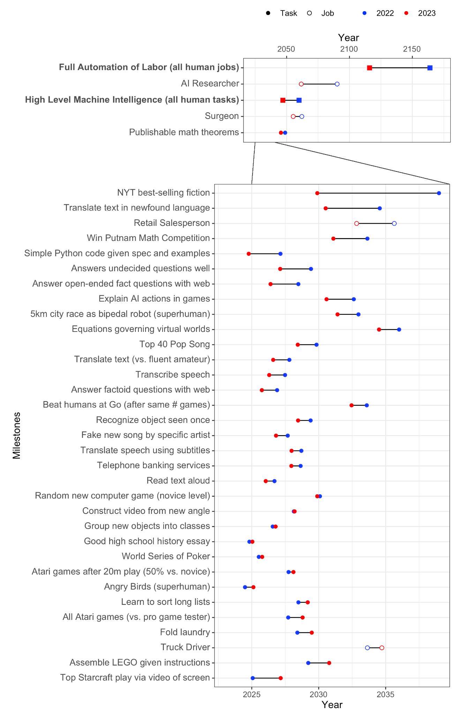

1.7 Appendix 1: Expert Opinions¶
Reading Time: 4 minutes
Expert Opinions - Video Introduction
This video is optional and not necessary to understand the text.
1.7.1 Surveys¶
According to a recent survey conducted by AI Impact (AI Impacts, 2022): “Expected time to human-level performance dropped 1–5 decades since the 2022 survey. As always, our questions about ‘high-level machine intelligence’ (HLMI) and ‘full automation of labor’ (FAOL) got very different answers, and individuals disagreed a lot (shown as thin lines below), but the aggregate forecasts for both sets of questions dropped sharply. For context, between 2016 and 2022 surveys, the forecast for HLMI had only shifted about a year.”

Figure: 2024 Survey of AI Experts (AI Impacts, 2022)
It is also possible to compare the predictions of the same study in 2022 to the current results. It is interesting to note that the community has generally underestimated the speed of progress over the year 2023 and has adjusted its predictions downward. Some predictions are quite surprising. For example, tasks like "Write High School Essay" and "Transcribe Speech" are arguably already automated with ChatGPT and Whisper, respectively. However, it appears that researchers are not aware of these results. Additionally, it is surprising that the forecast for when we are able to build an “AI researcher” has longer timelines than when we are able to build “High-level machine intelligence (all human tasks)”.
The median of the 2024 expert survey predicts human-level machine intelligence (HLMI) in 2049.
1.7.2 Expert Quotes¶
Here are some quotes from experts regarding transformative AI:
Geoffrey Hinton
"Until quite recently, I thought it was going to be like 20 to 50 years before we have general purpose AI," Hinton said. "And now I think it may be 20 years or less." (source)
Yoshua Bengio
Leading expert in AI, Yoshua Bengio: "...it started to dawn on me that my previous estimates of when human-level AI would be reached needed to be radically changed. Instead of decades to centuries, I now see it as 5 to 20 years with 90%." (source)
Yann LeCun
“By "not any time soon", I mean "clearly not in the next 5 years", contrary to a number of folks in the AI industry.” (source)
Ilya Sutskever
"You're gonna see dramatically more intelligent systems in 10 or 15 years from now, and I think it's highly likely that those systems will have a completely astronomical impact on society" (source)
Demis Hassabis
“We could only be a few years, maybe a decade away” (source)
Note that Hinton, Bengio, and Sutskever are the 3 most cited researchers in the field of AI. And that Hinton, Bengio, and LeCun are the recipients of the Turing Award in Deep Learning. Some users on reddit have put together a comprehensive list of publicly stated AI timelines forecasts from famous researchers and industry leaders.
1.7.3 Prediction Markets¶
Prediction markets are like betting systems where people can buy and sell shares based on their predictions of future events. For instance, if there’s a prediction market for a presidential election, you can buy shares for the candidate you think will win. If many people believe Candidate A will win, the price of shares for Candidate A goes up, indicating a higher probability of winning.
These markets are helpful because they gather the knowledge and opinions of many people, often leading to accurate predictions. For example, a company might use a prediction market to forecast whether a new product will succeed. Employees can buy shares if they believe the product will do well. If the majority think it will succeed, the share price goes up, giving the company a good indication of the product’s potential success.
By allowing participants to profit from accurate predictions, these markets encourage the sharing of valuable information and provide real-time updates on the likelihood of various outcomes. The argument is that either prediction markets are more accurate than experts, or experts should be able to make a lot of money from these markets and, in doing so, correct the markets. So the incentive for profit leads to the most accurate predictions. Examples of prediction markets include manifold, or metaculus.
When using prediction markets to estimate the reproducibility of scientific research it was found that they outperformed expert surveys (source). So if a lot of experts participate, prediction markets might be one of our best probabilistic forecasting tools, better even than surveys or experts.
The live charts below show the results of the prediction markets from Metaculus for - “When will the first weakly general AI system be devised, tested, and publicly announced?” At the time of writing, weakly general systems are expected in 2027, and general systems in 2032.